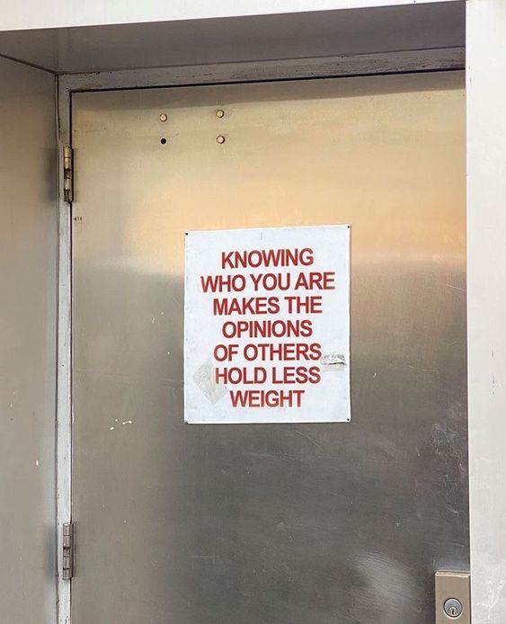

Feature Matching Chapter #1
SIFT Feature Matching | Scale-invariant feature transform

3D Reconstruction에서 가장 중요하게 생각되는 것은 Feature Matching 이라고 생각된다. 이게 왜 중요하냐면 말로는 좀 어려운데 일단 설명을 하자면...
실시간으로 카메라로 부터 이미지를 받아오는데 Frame1, Frame2 가 있다고 하자. Frame1은 Frame2의 바로 다음 프레임이라고 할 때, Frame1와 Frame2는 반드시 차이가 있을 것이다. 여기서 Feature Matching의 중요한 것은 같은 물체의 특정 특징점들을 지속적으로 Tracking 해야한다는 것이다.
2D 이미지의 여러 부분을 합성하여 3D로 변환하는 각 프레임에서 동일한 특징점들 찾아 이를 좌표화하여 삼차원으로 어떻게 변환을 해주냐가 가장 큰 관건이기에 나는 Feature Matching이 3D Reconstruction을 하는데에 있어 중요하다고 생각하는 것이다. Feature Matching 같은 경우는 굉장히 많은 기술들이 있는데다 HOG 또한 Feature Matching에 속한다. 뭐 엄연히 따져야 속하긴하기에 Object Detection과 Feature Matching의 애매한 중간 쯤에 있다고 생각한다.
아, 뭐 아무튼 그게 중요한게 아니라 이런 저런 기술이 있다는거다. 일단 사진에 올라온 것은 BFMatcher 와 SIFT로 Feature Matching을 한 것이다. 여기서 헷갈리지 말아야 하는게 BFM는 특징점을 찾아 맞춰주는거고 SIFT나 ORB 같은 애들은 그 매칭점들을 설명해주는 역할인거다. 어차피 추가적인 설명은 할거닌까 아래 내용들을 보면서 이해해보도록. 그럼 순차적으로 설명을 이어가보자.
BFMatcher
명확히는 BF Match 인데 뭐 이게 라이브러리에서 BFMatcher로 불리다보니 습관적으로 BFMatcher라고 하게 된다. 아무튼 BF Match은 Brute Force의 약아로 그 전쟁에서 쓰이는 그 방법과 같다고 생각하면 아주 정확하다. 원시적으로 푸는 무차별 대입 방식이다. 아주 간단하고 아주 쉽고 아주 비효율적인 방식이지만 기본적이기도 하다. 여기서 BFMatcher의 역할은 입력받은 특징점들을 찾아 무차별적으로 탐색하는 방식을 말하는 것이다.
말로하면 이해가 어려울터이니 자 이제 사진으로 설명을 하겠다.
자 일단 아래 사진을 원본이라고 하자.
그리고 아래 사진이 이제 찾고자 하는 이미지가 될거다.
그러면 일단 BFMatcher로 각각 이미지의 특징점들을 찾아내는데 이를 kp1, kp2, kp3 ... kpN 이라고 하자. 이때 N은 이미지의 따라 달라진다.